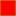

<!doctype html>
<html lang="en">
    <head>
        <meta charset="utf-8">
        <meta http-equiv="X-UA-Compatible" content="IE=edge">
        <meta name="viewport" content="initial-scale=1,user-scalable=no,maximum-scale=1,width=device-width">
        <meta name="mobile-web-app-capable" content="yes">
        <meta name="apple-mobile-web-app-capable" content="yes">
        <link rel="stylesheet" href="css/leaflet.css">
        <link rel="stylesheet" href="css/L.Control.Layers.Tree.css">
        <link rel="stylesheet" href="css/L.Control.Locate.min.css">
        <link rel="stylesheet" href="css/qgis2web.css">
        <link rel="stylesheet" href="css/fontawesome-all.min.css">
        <link rel="stylesheet" href="css/leaflet-search.css">
        <link rel="stylesheet" href="css/leaflet-control-geocoder.Geocoder.css">
        <link rel="stylesheet" href="css/leaflet-measure.css">
        <style>
        html, body, #map {
            width: 100%;
            height: 100%;
            padding: 0;
            margin: 0;
        }
        </style>
        <title> Ruta Tierra Adentro  por Carretera 2025</title>
    </head>
    <body>
        <div id="map">
        </div>
        <script src="js/qgis2web_expressions.js"></script>
        <script src="js/leaflet.js"></script>
        <script src="js/L.Control.Layers.Tree.min.js"></script>
        <script src="js/L.Control.Locate.min.js"></script>
        <script src="js/leaflet.rotatedMarker.js"></script>
        <script src="js/leaflet.pattern.js"></script>
        <script src="js/leaflet-hash.js"></script>
        <script src="js/Autolinker.min.js"></script>
        <script src="js/rbush.min.js"></script>
        <script src="js/labelgun.min.js"></script>
        <script src="js/labels.js"></script>
        <script src="js/leaflet-control-geocoder.Geocoder.js"></script>
        <script src="js/leaflet-measure.js"></script>
        <script src="js/leaflet-search.js"></script>
        <script src="data/USA_2.js"></script>
        <script src="data/MX_3.js"></script>
        <script src="data/reasUrbanas_4.js"></script>
        <script src="data/Entidades_5.js"></script>
        <script src="data/Municipios_6.js"></script>
        <script src="data/RutaporCarretera_7.js"></script>
        <script src="data/Centroides_8.js"></script>
        <script>
        var map = L.map('map', {
            zoomControl:false, maxZoom:28, minZoom:5
        }).fitBounds([[16.14947279839027,-108.69521669939516],[27.43041467090421,-89.16175485044538]]);
        var hash = new L.Hash(map);
        map.attributionControl.setPrefix('<a href="https://github.com/tomchadwin/qgis2web" target="_blank">qgis2web</a> &middot; <a href="https://leafletjs.com" title="A JS library for interactive maps">Leaflet</a> &middot; <a href="https://qgis.org">QGIS</a>');
        var autolinker = new Autolinker({truncate: {length: 30, location: 'smart'}});
        // remove popup's row if "visible-with-data"
        function removeEmptyRowsFromPopupContent(content, feature) {
         var tempDiv = document.createElement('div');
         tempDiv.innerHTML = content;
         var rows = tempDiv.querySelectorAll('tr');
         for (var i = 0; i < rows.length; i++) {
             var td = rows[i].querySelector('td.visible-with-data');
             var key = td ? td.id : '';
             if (td && td.classList.contains('visible-with-data') && feature.properties[key] == null) {
                 rows[i].parentNode.removeChild(rows[i]);
             }
         }
         return tempDiv.innerHTML;
        }
        // add class to format popup if it contains media
		function addClassToPopupIfMedia(content, popup) {
			var tempDiv = document.createElement('div');
			tempDiv.innerHTML = content;
			if (tempDiv.querySelector('td img')) {
				popup._contentNode.classList.add('media');
					// Delay to force the redraw
					setTimeout(function() {
						popup.update();
					}, 10);
			} else {
				popup._contentNode.classList.remove('media');
			}
		}
        var title = new L.Control({'position':'topleft'});
        title.onAdd = function (map) {
            this._div = L.DomUtil.create('div', 'info');
            this.update();
            return this._div;
        };
        title.update = function () {
            this._div.innerHTML = '<h2> Ruta Tierra Adentro  por Carretera 2025</h2>';
        };
        title.addTo(map);
        var zoomControl = L.control.zoom({
            position: 'topleft'
        }).addTo(map);
        L.control.locate({locateOptions: {maxZoom: 19}}).addTo(map);
        var measureControl = new L.Control.Measure({
            position: 'topleft',
            primaryLengthUnit: 'meters',
            secondaryLengthUnit: 'kilometers',
            primaryAreaUnit: 'sqmeters',
            secondaryAreaUnit: 'hectares'
        });
        measureControl.addTo(map);
        document.getElementsByClassName('leaflet-control-measure-toggle')[0].innerHTML = '';
        document.getElementsByClassName('leaflet-control-measure-toggle')[0].className += ' fas fa-ruler';
        var bounds_group = new L.featureGroup([]);
        function setBounds() {
        }
        map.createPane('pane_EsriPhysical_0');
        map.getPane('pane_EsriPhysical_0').style.zIndex = 400;
        var layer_EsriPhysical_0 = L.tileLayer('https://server.arcgisonline.com/arcgis/rest/services/World_Physical_Map/MapServer/tile/{z}/{y}/{x}', {
            pane: 'pane_EsriPhysical_0',
            opacity: 1.0,
            attribution: '',
            minZoom: 5,
            maxZoom: 28,
        });
        layer_EsriPhysical_0;
        map.addLayer(layer_EsriPhysical_0);
        map.createPane('pane_GoogleMaps_1');
        map.getPane('pane_GoogleMaps_1').style.zIndex = 401;
        var layer_GoogleMaps_1 = L.tileLayer('https://mt1.google.com/vt/lyrs=m&x={x}&y={y}&z={z}', {
            pane: 'pane_GoogleMaps_1',
            opacity: 1.0,
            attribution: '',
            minZoom: 5,
            maxZoom: 28,
        });
        layer_GoogleMaps_1;
        map.addLayer(layer_GoogleMaps_1);
        function pop_USA_2(feature, layer) {
            var popupContent = '<table>\
                    <tr>\
                        <td colspan="2">' + (feature.properties['STATEFP'] !== null ? autolinker.link(String(feature.properties['STATEFP']).replace(/'/g, '\'').toLocaleString()) : '') + '</td>\
                    </tr>\
                    <tr>\
                        <td colspan="2">' + (feature.properties['STATENS'] !== null ? autolinker.link(String(feature.properties['STATENS']).replace(/'/g, '\'').toLocaleString()) : '') + '</td>\
                    </tr>\
                    <tr>\
                        <td colspan="2">' + (feature.properties['AFFGEOID'] !== null ? autolinker.link(String(feature.properties['AFFGEOID']).replace(/'/g, '\'').toLocaleString()) : '') + '</td>\
                    </tr>\
                    <tr>\
                        <td colspan="2">' + (feature.properties['GEOID'] !== null ? autolinker.link(String(feature.properties['GEOID']).replace(/'/g, '\'').toLocaleString()) : '') + '</td>\
                    </tr>\
                    <tr>\
                        <td colspan="2">' + (feature.properties['STUSPS'] !== null ? autolinker.link(String(feature.properties['STUSPS']).replace(/'/g, '\'').toLocaleString()) : '') + '</td>\
                    </tr>\
                    <tr>\
                        <td colspan="2">' + (feature.properties['NAME'] !== null ? autolinker.link(String(feature.properties['NAME']).replace(/'/g, '\'').toLocaleString()) : '') + '</td>\
                    </tr>\
                    <tr>\
                        <td colspan="2">' + (feature.properties['LSAD'] !== null ? autolinker.link(String(feature.properties['LSAD']).replace(/'/g, '\'').toLocaleString()) : '') + '</td>\
                    </tr>\
                    <tr>\
                        <td colspan="2">' + (feature.properties['ALAND'] !== null ? autolinker.link(String(feature.properties['ALAND']).replace(/'/g, '\'').toLocaleString()) : '') + '</td>\
                    </tr>\
                    <tr>\
                        <td colspan="2">' + (feature.properties['AWATER'] !== null ? autolinker.link(String(feature.properties['AWATER']).replace(/'/g, '\'').toLocaleString()) : '') + '</td>\
                    </tr>\
                </table>';
            var content = removeEmptyRowsFromPopupContent(popupContent, feature);
			layer.on('popupopen', function(e) {
				addClassToPopupIfMedia(content, e.popup);
			});
			layer.bindPopup(content, { maxHeight: 400 });
        }

        function style_USA_2_0() {
            return {
                pane: 'pane_USA_2',
                opacity: 1,
                color: 'rgba(0,26,28,1.0)',
                dashArray: '4.0,2.0',
                lineCap: 'square',
                lineJoin: 'bevel',
                weight: 1.0,
                fillOpacity: 0,
                interactive: false,
            }
        }
        map.createPane('pane_USA_2');
        map.getPane('pane_USA_2').style.zIndex = 402;
        map.getPane('pane_USA_2').style['mix-blend-mode'] = 'normal';
        var layer_USA_2 = new L.geoJson(json_USA_2, {
            attribution: '',
            interactive: false,
            dataVar: 'json_USA_2',
            layerName: 'layer_USA_2',
            pane: 'pane_USA_2',
            onEachFeature: pop_USA_2,
            style: style_USA_2_0,
        });
        bounds_group.addLayer(layer_USA_2);
        map.addLayer(layer_USA_2);
        function pop_MX_3(feature, layer) {
            var popupContent = '<table>\
                    <tr>\
                        <td colspan="2">' + (feature.properties['CVEGEO'] !== null ? autolinker.link(String(feature.properties['CVEGEO']).replace(/'/g, '\'').toLocaleString()) : '') + '</td>\
                    </tr>\
                    <tr>\
                        <td colspan="2">' + (feature.properties['CVE_ENT'] !== null ? autolinker.link(String(feature.properties['CVE_ENT']).replace(/'/g, '\'').toLocaleString()) : '') + '</td>\
                    </tr>\
                    <tr>\
                        <td colspan="2">' + (feature.properties['NOMGEO'] !== null ? autolinker.link(String(feature.properties['NOMGEO']).replace(/'/g, '\'').toLocaleString()) : '') + '</td>\
                    </tr>\
                </table>';
            var content = removeEmptyRowsFromPopupContent(popupContent, feature);
			layer.on('popupopen', function(e) {
				addClassToPopupIfMedia(content, e.popup);
			});
			layer.bindPopup(content, { maxHeight: 400 });
        }

        function style_MX_3_0() {
            return {
                pane: 'pane_MX_3',
                opacity: 1,
                color: 'rgba(0,26,28,1.0)',
                dashArray: '4.0,2.0',
                lineCap: 'square',
                lineJoin: 'bevel',
                weight: 1.0,
                fillOpacity: 0,
                interactive: false,
            }
        }
        map.createPane('pane_MX_3');
        map.getPane('pane_MX_3').style.zIndex = 403;
        map.getPane('pane_MX_3').style['mix-blend-mode'] = 'normal';
        var layer_MX_3 = new L.geoJson(json_MX_3, {
            attribution: '',
            interactive: false,
            dataVar: 'json_MX_3',
            layerName: 'layer_MX_3',
            pane: 'pane_MX_3',
            onEachFeature: pop_MX_3,
            style: style_MX_3_0,
        });
        bounds_group.addLayer(layer_MX_3);
        map.addLayer(layer_MX_3);
        function pop_reasUrbanas_4(feature, layer) {
            var popupContent = '<table>\
                    <tr>\
                        <th scope="row">NOMGEO</th>\
                        <td class="visible-with-data" id="NOMGEO">' + (feature.properties['NOMGEO'] !== null ? autolinker.link(String(feature.properties['NOMGEO']).replace(/'/g, '\'').toLocaleString()) : '') + '</td>\
                    </tr>\
                </table>';
            var content = removeEmptyRowsFromPopupContent(popupContent, feature);
			layer.on('popupopen', function(e) {
				addClassToPopupIfMedia(content, e.popup);
			});
			layer.bindPopup(content, { maxHeight: 400 });
        }

        function style_reasUrbanas_4_0() {
            return {
                pane: 'pane_reasUrbanas_4',
                opacity: 1,
                color: 'rgba(170,170,62,1.0)',
                dashArray: '',
                lineCap: 'butt',
                lineJoin: 'miter',
                weight: 1.0, 
                fill: true,
                fillOpacity: 1,
                fillColor: 'rgba(255,0,0,1.0)',
                interactive: true,
            }
        }
        map.createPane('pane_reasUrbanas_4');
        map.getPane('pane_reasUrbanas_4').style.zIndex = 404;
        map.getPane('pane_reasUrbanas_4').style['mix-blend-mode'] = 'normal';
        var layer_reasUrbanas_4 = new L.geoJson(json_reasUrbanas_4, {
            attribution: '',
            interactive: true,
            dataVar: 'json_reasUrbanas_4',
            layerName: 'layer_reasUrbanas_4',
            pane: 'pane_reasUrbanas_4',
            onEachFeature: pop_reasUrbanas_4,
            style: style_reasUrbanas_4_0,
        });
        bounds_group.addLayer(layer_reasUrbanas_4);
        map.addLayer(layer_reasUrbanas_4);
        function pop_Entidades_5(feature, layer) {
            var popupContent = '<table>\
                    <tr>\
                        <td colspan="2">' + (feature.properties['NOMGEO'] !== null ? autolinker.link(String(feature.properties['NOMGEO']).replace(/'/g, '\'').toLocaleString()) : '') + '</td>\
                    </tr>\
                </table>';
            var content = removeEmptyRowsFromPopupContent(popupContent, feature);
			layer.on('popupopen', function(e) {
				addClassToPopupIfMedia(content, e.popup);
			});
			layer.bindPopup(content, { maxHeight: 400 });
        }

        function style_Entidades_5_0() {
            return {
                pane: 'pane_Entidades_5',
                opacity: 1,
                color: 'rgba(104,104,104,1.0)',
                dashArray: '',
                lineCap: 'butt',
                lineJoin: 'miter',
                weight: 2.0, 
                fill: true,
                fillOpacity: 1,
                fillColor: 'rgba(244,196,163,0.0)',
                interactive: true,
            }
        }
        map.createPane('pane_Entidades_5');
        map.getPane('pane_Entidades_5').style.zIndex = 405;
        map.getPane('pane_Entidades_5').style['mix-blend-mode'] = 'normal';
        var layer_Entidades_5 = new L.geoJson(json_Entidades_5, {
            attribution: '',
            interactive: true,
            dataVar: 'json_Entidades_5',
            layerName: 'layer_Entidades_5',
            pane: 'pane_Entidades_5',
            onEachFeature: pop_Entidades_5,
            style: style_Entidades_5_0,
        });
        bounds_group.addLayer(layer_Entidades_5);
        map.addLayer(layer_Entidades_5);
        function pop_Municipios_6(feature, layer) {
            var popupContent = '<table>\
                    <tr>\
                        <td colspan="2">' + (feature.properties['NOMGEO'] !== null ? autolinker.link(String(feature.properties['NOMGEO']).replace(/'/g, '\'').toLocaleString()) : '') + '</td>\
                    </tr>\
                </table>';
            var content = removeEmptyRowsFromPopupContent(popupContent, feature);
			layer.on('popupopen', function(e) {
				addClassToPopupIfMedia(content, e.popup);
			});
			layer.bindPopup(content, { maxHeight: 400 });
        }

        function style_Municipios_6_0() {
            return {
                pane: 'pane_Municipios_6',
                opacity: 1,
                color: 'rgba(35,35,35,1.0)',
                dashArray: '',
                lineCap: 'butt',
                lineJoin: 'miter',
                weight: 1.0, 
                fill: true,
                fillOpacity: 1,
                fillColor: 'rgba(236,244,32,0.3803921568627451)',
                interactive: true,
            }
        }
        map.createPane('pane_Municipios_6');
        map.getPane('pane_Municipios_6').style.zIndex = 406;
        map.getPane('pane_Municipios_6').style['mix-blend-mode'] = 'normal';
        var layer_Municipios_6 = new L.geoJson(json_Municipios_6, {
            attribution: '',
            interactive: true,
            dataVar: 'json_Municipios_6',
            layerName: 'layer_Municipios_6',
            pane: 'pane_Municipios_6',
            onEachFeature: pop_Municipios_6,
            style: style_Municipios_6_0,
        });
        bounds_group.addLayer(layer_Municipios_6);
        map.addLayer(layer_Municipios_6);
        function pop_RutaporCarretera_7(feature, layer) {
            var popupContent = '<table>\
                    <tr>\
                        <td colspan="2">' + (feature.properties['visibility'] !== null ? autolinker.link(String(feature.properties['visibility']).replace(/'/g, '\'').toLocaleString()) : '') + '</td>\
                    </tr>\
                    <tr>\
                        <td colspan="2">' + (feature.properties['icon'] !== null ? autolinker.link(String(feature.properties['icon']).replace(/'/g, '\'').toLocaleString()) : '') + '</td>\
                    </tr>\
                </table>';
            var content = removeEmptyRowsFromPopupContent(popupContent, feature);
			layer.on('popupopen', function(e) {
				addClassToPopupIfMedia(content, e.popup);
			});
			layer.bindPopup(content, { maxHeight: 400 });
        }

        function style_RutaporCarretera_7_0() {
            return {
                pane: 'pane_RutaporCarretera_7',
                opacity: 1,
                color: 'rgba(0,74,255,1.0)',
                dashArray: '',
                lineCap: 'round',
                lineJoin: 'round',
                weight: 5.0,
                fillOpacity: 0,
                interactive: false,
            }
        }
        map.createPane('pane_RutaporCarretera_7');
        map.getPane('pane_RutaporCarretera_7').style.zIndex = 407;
        map.getPane('pane_RutaporCarretera_7').style['mix-blend-mode'] = 'normal';
        var layer_RutaporCarretera_7 = new L.geoJson(json_RutaporCarretera_7, {
            attribution: '',
            interactive: false,
            dataVar: 'json_RutaporCarretera_7',
            layerName: 'layer_RutaporCarretera_7',
            pane: 'pane_RutaporCarretera_7',
            onEachFeature: pop_RutaporCarretera_7,
            style: style_RutaporCarretera_7_0,
        });
        bounds_group.addLayer(layer_RutaporCarretera_7);
        map.addLayer(layer_RutaporCarretera_7);
        function pop_Centroides_8(feature, layer) {
            var popupContent = '<table>\
                    <tr>\
                        <th scope="row">NOMGEO</th>\
                        <td class="visible-with-data" id="NOMGEO">' + (feature.properties['NOMGEO'] !== null ? autolinker.link(String(feature.properties['NOMGEO']).replace(/'/g, '\'').toLocaleString()) : '') + '</td>\
                    </tr>\
                    <tr>\
                        <th scope="row">platillo</th>\
                        <td class="visible-with-data" id="platillo">' + (feature.properties['platillo'] !== null ? '' : '') + '</td>\
                    </tr>\
                    <tr>\
                        <th scope="row">Nombre del platillo</th>\
                        <td class="visible-with-data" id="Nombre del platillo">' + (feature.properties['Nombre del platillo'] !== null ? autolinker.link(String(feature.properties['Nombre del platillo']).replace(/'/g, '\'').toLocaleString()) : '') + '</td>\
                    </tr>\
                </table>';
            var content = removeEmptyRowsFromPopupContent(popupContent, feature);
			layer.on('popupopen', function(e) {
				addClassToPopupIfMedia(content, e.popup);
			});
			layer.bindPopup(content, { maxHeight: 400 });
        }

        function style_Centroides_8_0() {
            return {
                pane: 'pane_Centroides_8',
        rotationAngle: 0.0,
        rotationOrigin: 'center center',
        icon: L.icon({
            iconUrl: 'markers/Centroides_8.svg',
            iconSize: [23.56, 23.56]
        }),
                interactive: true,
            }
        }
        map.createPane('pane_Centroides_8');
        map.getPane('pane_Centroides_8').style.zIndex = 408;
        map.getPane('pane_Centroides_8').style['mix-blend-mode'] = 'normal';
        var layer_Centroides_8 = new L.geoJson(json_Centroides_8, {
            attribution: '',
            interactive: true,
            dataVar: 'json_Centroides_8',
            layerName: 'layer_Centroides_8',
            pane: 'pane_Centroides_8',
            onEachFeature: pop_Centroides_8,
            pointToLayer: function (feature, latlng) {
                var context = {
                    feature: feature,
                    variables: {}
                };
                return L.marker(latlng, style_Centroides_8_0(feature));
            },
        });
        bounds_group.addLayer(layer_Centroides_8);
        map.addLayer(layer_Centroides_8);
        map.on("zoomend", function(e) {
            if (map.getZoom() <= 8 && map.getZoom() >= 4) {
                map.addLayer(layer_EsriPhysical_0);
            } else if (map.getZoom() > 8 || map.getZoom() < 4) {
                map.removeLayer(layer_EsriPhysical_0);
            }
            if (map.getZoom() <= 19 && map.getZoom() >= 8) {
                map.addLayer(layer_GoogleMaps_1);
            } else if (map.getZoom() > 19 || map.getZoom() < 8) {
                map.removeLayer(layer_GoogleMaps_1);
            }
        });
            if (map.getZoom() <= 8 && map.getZoom() >= 4) {
                map.addLayer(layer_EsriPhysical_0);
            } else if (map.getZoom() > 8 || map.getZoom() < 4) {
                map.removeLayer(layer_EsriPhysical_0);
            }
            if (map.getZoom() <= 19 && map.getZoom() >= 8) {
                map.addLayer(layer_GoogleMaps_1);
            } else if (map.getZoom() > 19 || map.getZoom() < 8) {
                map.removeLayer(layer_GoogleMaps_1);
            }
        var osmGeocoder = new L.Control.Geocoder({
            collapsed: true,
            position: 'topleft',
            text: 'Search',
            title: 'Testing'
        }).addTo(map);
        document.getElementsByClassName('leaflet-control-geocoder-icon')[0]
        .className += ' fa fa-search';
        document.getElementsByClassName('leaflet-control-geocoder-icon')[0]
        .title += 'Search for a place';
        var overlaysTree = [
            {label: ' Centroides', layer: layer_Centroides_8},
            {label: '  Ruta por Carretera', layer: layer_RutaporCarretera_7},
            {label: ' Municipios', layer: layer_Municipios_6},
            {label: ' Entidades', layer: layer_Entidades_5},
            {label: ' Áreas Urbanas', layer: layer_reasUrbanas_4},
            {label: ' MX', layer: layer_MX_3},
            {label: ' USA', layer: layer_USA_2},
            {label: "Google Maps", layer: layer_GoogleMaps_1},
            {label: "Esri Physical", layer: layer_EsriPhysical_0},]
        var lay = L.control.layers.tree(null, overlaysTree,{
            //namedToggle: true,
            //selectorBack: false,
            //closedSymbol: '&#8862; &#x1f5c0;',
            //openedSymbol: '&#8863; &#x1f5c1;',
            //collapseAll: 'Collapse all',
            //expandAll: 'Expand all',
            collapsed: false, 
        });
        lay.addTo(map);
		document.addEventListener("DOMContentLoaded", function() {
            // set new Layers List height which considers toggle icon
            function newLayersListHeight() {
                var layerScrollbarElement = document.querySelector('.leaflet-control-layers-scrollbar');
                if (layerScrollbarElement) {
                    var layersListElement = document.querySelector('.leaflet-control-layers-list');
                    var originalHeight = layersListElement.style.height 
                        || window.getComputedStyle(layersListElement).height;
                    var newHeight = parseFloat(originalHeight) - 50;
                    layersListElement.style.height = newHeight + 'px';
                }
            }
            var isLayersListExpanded = true;
            var controlLayersElement = document.querySelector('.leaflet-control-layers');
            var toggleLayerControl = document.querySelector('.leaflet-control-layers-toggle');
            // toggle Collapsed/Expanded and apply new Layers List height
            toggleLayerControl.addEventListener('click', function() {
                if (isLayersListExpanded) {
                    controlLayersElement.classList.remove('leaflet-control-layers-expanded');
                } else {
                    controlLayersElement.classList.add('leaflet-control-layers-expanded');
                }
                isLayersListExpanded = !isLayersListExpanded;
                newLayersListHeight()
            });	
			// apply new Layers List height if toggle layerstree
			if (controlLayersElement) {
				controlLayersElement.addEventListener('click', function(event) {
					var toggleLayerHeaderPointer = event.target.closest('.leaflet-layerstree-header-pointer span');
					if (toggleLayerHeaderPointer) {
						newLayersListHeight();
					}
				});
			}
            // Collapsed/Expanded at Start to apply new height
            setTimeout(function() {
                toggleLayerControl.click();
            }, 10);
            setTimeout(function() {
                toggleLayerControl.click();
            }, 10);
            // Collapsed touch/small screen
            var isSmallScreen = window.innerWidth < 650;
            if (isSmallScreen) {
                setTimeout(function() {
                    controlLayersElement.classList.remove('leaflet-control-layers-expanded');
                    isLayersListExpanded = !isLayersListExpanded;
                }, 500);
            }  
        });       
        setBounds();
        var i = 0;
        layer_Centroides_8.eachLayer(function(layer) {
            var context = {
                feature: layer.feature,
                variables: {}
            };
            layer.bindTooltip((layer.feature.properties['NOMGEO'] !== null?String('<div style="color: #323232; font-size: 10pt; font-family: \'Bitstream Charter\', sans-serif;">' + layer.feature.properties['NOMGEO']) + '</div>':''), {permanent: true, offset: [-0, -16], className: 'css_Centroides_8'});
            labels.push(layer);
            totalMarkers += 1;
              layer.added = true;
              addLabel(layer, i);
              i++;
        });
        map.addControl(new L.Control.Search({
            layer: layer_Centroides_8,
            initial: false,
            hideMarkerOnCollapse: true,
            propertyName: 'NOMGEO'}));
        document.getElementsByClassName('search-button')[0].className +=
         ' fa fa-binoculars';
        resetLabels([layer_Entidades_5,layer_Municipios_6,layer_Centroides_8]);
        map.on("zoomend", function(){
            resetLabels([layer_Entidades_5,layer_Municipios_6,layer_Centroides_8]);
        });
        map.on("layeradd", function(){
            resetLabels([layer_Entidades_5,layer_Municipios_6,layer_Centroides_8]);
        });
        map.on("layerremove", function(){
            resetLabels([layer_Entidades_5,layer_Municipios_6,layer_Centroides_8]);
        });
        </script>
    </body>
</html>
